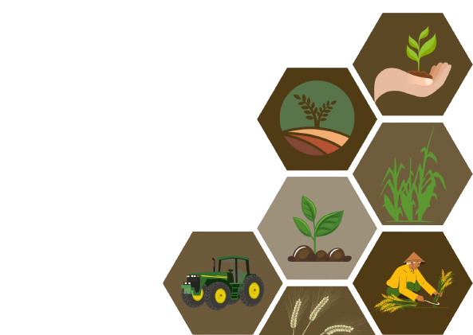

A one stop platform for farmers.
Krishisewa is a one step solution for the Agriculture sector. A website which will give complete information regarding crops, recommend farmers best fertilizers and best crops based on their weather and soil conditions, predict the disease their crops might have, an ecommerce platform for them to buy and sell their crops directly and a chatbot for their assistance in Hindi and English. They will even receive weather updates through SMS on their phone.
